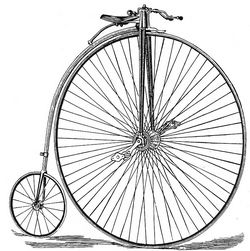

© Copyright - administrateur Bicy Gonzo.
- Accueil >>> Index de THE PENNY-FART'HO
THE PENNY FART'HO

Living a life in the global Village
The PENNY-FART'HO est un quotidien. Notre quotidien. Il ne prétend rien ; il ne revendique rien ; il est là. Une présence.
Accès aux publications : 08/12/2016 - 09/12/2016
* Le matériel ci-dessus nous a été envoyé électroniquement par Brothel & Cie inc.® ™ sans plus de précision. Nous avons décidé de poster ces textes sur ce site web dans le même esprit que celui dans lequel ils ont été traduits et édités, c'est à dire dans l'esprit du libre échange de connaissances et d'informations pertinentes et / ou utiles et / ou de la culture. Nous n'avons pas reçu, et ne recevrons aucune compensation financière ou autre pour l'hébergement de ces textes.
© Copyright - administrateur Bicy Gonzo.